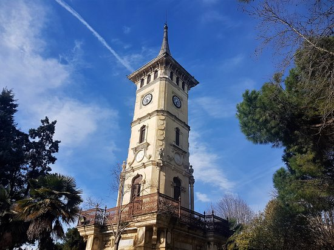
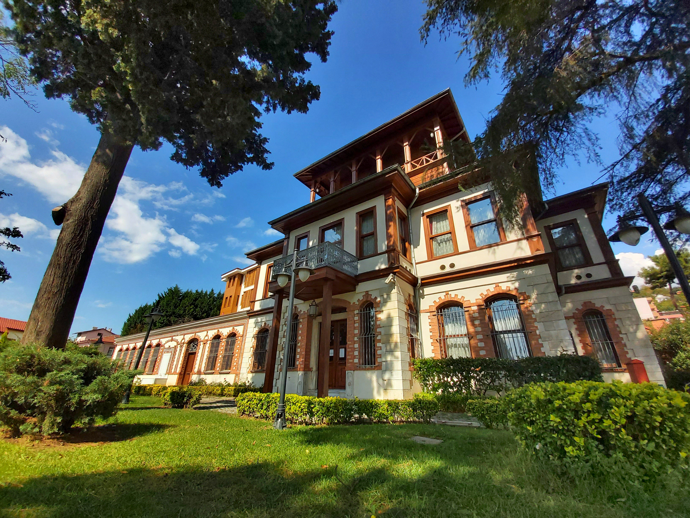
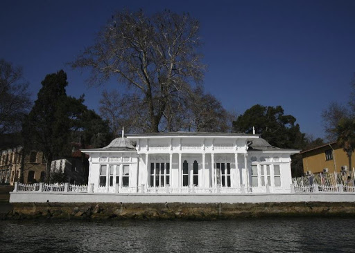
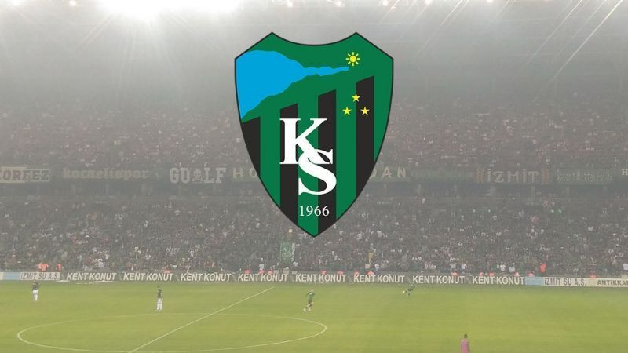

Merhaba, Ben Ecre! 10 Ağustos 1999 İzmit doğumluyum ve de ilk günden beri İzmit’e bağlı Kartepe ilçesinde ikamet etmekteyim.
Kendimden bahsetmeye öncelikle eğitim hayatımdan başlayacak olursam ilk ve ortaokulumu aynı şekilde Kartepe/Sarımeşe’de bitirdikten sonra Arslanbey’de bulunan Kamer Öncel Anadolu Sağlık Meslek Lisesinde hemşirelik lise eğitimime devam ettim ve de lise mezunu olarak çalışabilecek son 2017 mezunu hemşire grubu de denilebilecek hemşire bölümünden mezun oldum fakat hemşireliği bir kenara koyaraktan üniversite seçimimi mühendislik üzerine devam ettirme kararını aldım ve Samsun/19 Mayıs Üniversitesi Bilgisayar Mühendisliği bölümünü kazandım ama şehri sevmemem, İzmit’ten bu kadar uzakta olmaktan hoşlanmamam gibi nedenlerle Sakarya Üniversitesi Endüstri Mühendisliğine geçiş yaptım ama aklımdan asla çıkmayan bilgisayar mühendisliğine daha fazla karşı koyamadım ve çap başvurumun başarılı sonuçlanmasıyla şu anda endüstri ve de bilgisayar mühendisliği öğrencisi olarak eğitimime devam etmekteyim.
Okul, okul, okul... O zaman sizi biraz da cv sayfasına yönlendirmeliyim!
Eğitim hayatımının inanılmaz yoğun olduğu, tam olarak hiçbir şeye yetemediğim bu dönemde beni hayatta tutan birkaç şeyden bahsetmem gerekirse buna cevabım çok net yürüyüş yapmak, saatlerce youtube izlemek olabilir. Youtube bu dönemde genelden biraz daha farklı olarak netflix/ puhu/ blutv vb. içeriklere göre daha çok tercih ettiğim bir uygulama haline geldi, bunun tek nedeni sanırım kafamı boşaltmak isteyişim ya da verimsiz bir an geçirme isteğim olabilir çünkü nasıl desem? Sürekli izlemem gereken sanal derslerim, yapmam gereken ödevler, vizeler, quizler, finaller derken sürekli içerisinde olduğum bilgi akışı/ öğrenme zorunluluğu durumuna bi nevi -kendi içimde- baş kaldırdığım birkaç saatlik hatta dakikalık an beni biraz daha iyi hissettiriyor.
Aynı şekilde yürüyüş yapmak da öyle! Ekranlara inanılmaz doyduğumuz bu corona döneminde her zaman dışarıda yürüyüş yapma fırsatım olmasa da evimde bulunan koşu bandı sayesinde uzun yürüyüşler yapabiliyorum, tabii ki dışarısı gibi olmuyor ama kimse dışarıda ceza yemek istemez değil mi :D
Yürüyüş demişken genelde rap dinlemek kendimi akışa kaptırmanın bir başka yolu. İşte size başlangıç için önereciğim bir playlist!
Ayrıca EN sevdiğim sanatçı Cem Adrian. Kendisi müziği, sesi, duruşu gibi başlıca nedenlerle kalbimi fetheden biri.. Corona nedenli aldığım biletim iptal olsa da daha önceden 2 konserine katılmış olmakla yetiniyorum. Umarım bir an önce bu zevki tekrardan yaşayabilirim.
Özgür bir müzisyen! .Cem Adrian
İlgi alanlarım hakkında biraz daha bilgi sahibi olmak isterseniz de buraya gidebilirsiniz!
Biraz da ailemden bahsedersem.. 4 kişilik çekirdek bir aileyiz. Annem ev hanımı, babam ise emekli ve de 17 yaşında bir erkek kardeşim var. Evde kaldığımız bu dönemlerde birlikte vakit geçirmekten her ne kadar çok sıkılsak da sürekli gülebildiği, eğlenebildiğim, her konuda çok açık ve de bana güvenmeleri en çok sevdiğim özellikleri olabilir.. Sanırım bir daha dünyaya gelecek olsam, yine onların kızı/ablası olmak isterdim
Lafımı bu dönemde beni takip etmeyi unutmayın diyerekten bitirmezsem olmaz!
Spordan başlamazsam olmaz! Spor, başta kendimi iyi hissettirmesi, beni anın problemlerinden uzaklaştırması ve bir o kadar da kendimdeki değişimi görmek açısından çok sevdiğim bir aktivite. En sevdiğim alanına gelecek olursam pek fazla grup aktivitelerinin bana göre olmayışı nedeniyle daha çok bireysel sporlarla ilgiliyim, örnek verecek olursam spor salonlarını inanılmaz çok seviyorum çünkü zamanla bir sonraki ağırlığa geçebilmek, koşuda nefesimi daha iyi kontrol edebilmek, esneme antrenmanlarımda daha iyi olmak vb. kendime yatırımımın sonuçlarını görmek beni çok motive ediyor. Bir diğeri ise yürümek! Sanırım yürümeyi spor salonuna tercih ederim hele de bahar aylarında ve yüzüme vuran ılık rüzgârı hissettiğim, ya da bir sahil kenarında dalgaların sesi eşliğinde kendi kendime kaldığım o anları inanılmaz çok seviyorum
Tabii ki hep faydalı ilgi alanlarım yok, ama fayda pek tabii kişiden kişiye göre değişebilen bir kavram. Benim için fayda başlığına pek girmese de biraz kafa dağıtmak / andan uzaklaşmak herkesin hakkı.
En sevdiğim film: NOT: Seni Seviyorum
Bu film bilinçli olarak izlediğim ilk film olabilir, en azından hatırladığım kadarıyla. İlk izlediğim film olması dışında tabii ki filmin konusu, duygusal sahneler, duygunun izleyiciye bu denli geçirilmesi hele benim gibi bir duygusalsanız bu filmi çok seveceksiniz!
En sevdiğim dizi: Person of Interest
Emin olun inanılmaz zor bir soru... Filmden çok dizi izleyen biri olarak bu soru için çok düşündüm. Yine cevabımı ilk izlediğim dizilerden kullanmış oldum ama bilmiyorum, ilk olması beni etkileyen bir durum. Person of Interest devletin olayları ilgili/ ilgisiz olarak sınıflandırdığı bir program üzerine kurulu bir dizi, karakterimiz ise -programın kurucusu- bu ilgisiz durumundaki insanların ölmesine izin veremeyecek kadar iyi bir insan olmasında dolayı sizin de anlayacağınız üzere ilgisiz -irrelevant- durumundaki insan hayatlarını kurtarmak üzerine bir dizi. Emin olun ÇOK seveceksiniz. Hemen izlemek istediğinizi biliyorum o zaman sizi buraya alalım.
Fragmanları sizin için bırakıyorum!
Özgeçmiş/CV
Kişisel
Adı Soyadı : Ecre Aynur AKÇAY
Doğum Yeri : İzmit
Uyruk : TC
Adres : Sarımeşe
Telefon : 05307994195
Mail:ecreakcay@gmail.com
B Tipi Sürücü Belgesi (2020/Eylül)
Sigara kullanmıyor
Eğitim
İlk Okul/ Orta Okul: Sarımeşe ilk/orta okulu
Lise : Kamer Öncel Anadolu Sağlık Meslek Lisesi (2017 Mezunu)
Üniversite : 19 Mayıs Üniversitesi (2018-2019)
Üniversite: Sakarya Üniversitesi-Endüstri Mühendisliği(2019-)-Bilgisayar Mühendisliği (2020-)
Bilgisayar Bilgisi
Python : Başlangıç seviyesi
C++ : Başlangıç seviyesi
C# : Orta seviye
Excel : Orta seviye
Yabancı Dil
İngilizce :İntermediate
Şehrim
22 yıldır içinde bulunduğum İzmit’in bağlı olduğu Kocaeli ili 2021 nüfusu, tahmini verilere göre 2.037.203’tür ve yüzölçümü 3.623 km2 olan Kocaeli ilinde kilometrekareye 551 insan düşmektedir. Kocaeli nüfus yoğunluğu 551/km2'dir.
Bu güzel şehirde sevdiğim birkaç yeri ise size şöyle sıralayabilirim:
Seka Park: İzmit denilince benim aklıma gelen ilk yer tabii ki sahil! Marketten alınan yiyecek/içecek ile arkadaşlarla vaktin nasıl geçtiğinin asla anlaşılmayacağına garanti verebilirim.
Taşra Kahve: İzmit’in çok da bilinmemiş bir kafesi olan Taşra ambiyansı ile benim inanılmaz sevdiğim yerlerden bir diğeri. Taşra adından da tahmin edildiği gibi kışın içeride yanan sobasıyla, duvarların eskitmeliği ve de asılı olan tablo/fotoğraf detaylarıyla, ufak tahta sandalyeleriyle tam da böyle hissettiriyor. Andan uzak. Ek olarak çalışanların hoş sohbeti, arada edilen tatlı ikramlarıyla çok sevdiğim bir yer.
Fuar: Fuar ya da luna park da diyebileceğim bu eğlence alanı önceleri tamamen oyuncak olarak gittiğim bir yerken yaşımın büyümesi/ oyuncaklara artık o kadar da ilgi duymamam ve tabii ki inanılmaz artan jeton fiyatlarıyla çok da tercih etmediğim bir alanken fuarın içinde buluna o küçük göl hala gitmekten çok hoşlandığım bir alan.
Göl, yazın açılan luna park alanıyla birlikte çok dolu olurken aksine sonbahar/kış ve ilkbahar başlarında bir o kadar sakin ve vakit geçirmeye çok uygun. Etrafında yürümek, kuğuları beslemek, arkadaşlarla vakit geçirmek, su bisikletlerini kullanmak gibi aktiviteleriyle vakit geçirmek ve de kendimle kalmaktan çok hoşlandığım bir diğer alan.
Ormanya: Ormanya Eşme ilçesinde yer alan, içerisinde yürüme parkurları, piknik alanları, mini hayvanat bahçesi, isteyenler için kamp yapma imkânı sunan mini bir orman! Ormanya, özellikle bu corona döneminde vakit geçirmek için, bahar/yaz dönemlerinde çok kalabalık olmasına karşın sosyal mesafemizi korumaya alan bırakan çok güzel bir alan.
Çarşı: İzmit çarşıdan ibarettir desem sanırım yeterli bir ifade olabilir. İzmit'in en büyük sıkıntısı da diyebiliriz bu duruma çünkü ulaşımın her daim çarşı aktarmalı olması benim gibi ilçelerde oturan kişiler için sorun olsa da bi yandan da her şeye çarşıdan ulaşılabiliyor olmak da aynı oranda olmasa da güzel bir şey. Çarşı, İzmit için en gelişmiş kısım diyebiliriz..daha çok kafe, gezmelik alanlar, ihtiyaçların kolayca karşılanabilir olması gibi durumlardan herkes için akla gelen ilk konum niteliğine sahiptir.
Çamlıtepe: Yuvacık ilçesinde yer alan Çamlıtepe manzarası ile bizi her daim büyülemek için var olmuş denebilir! Yazın eşsiz güzelliği ile kalbimizi çalsa da kışın çok fazla sis ve de tepenin soğukluğunun daha fazla olması nedenli pek de tercih edilmiyor. Ulaşım için şahsi araç şartı ve de dönemeçli dağ yolcuğuna hazır olmanız için şimdiden uyarıyorum ama sonuca değiyor, emin olun..
Sizin için bir öneri videosunu ise buradan izleyebilirsiniz.
Mirasımız
Tarihçe
Tarihçe
Marmara Bölgesi’nin kuzeydoğu kesiminde yer alan Kocaeli, tarihi gelişimi M.Ö.ki yıllara dayanan ve izleri halen günümüze kadar gelen çeşitli medeniyetlerin yaşadığı bir bölgedir. İlk çağlarda, Bithynia adı verilen bölgede kurulan kentler, sırasıyla, Olibya, Astakoz, Nicomedia, İznikmid, İzmid ve Kocaeli adlarını almıştır. Asya ve Avrupa doğal geçiş yolları üzerinde önemli bir kültür, ticaret ve jeopolitik köprü işlevi gören kent, M. Ö. bugünkü İzmit’in güney doğusuna, Başiskele çevresine yerleşen megaralı göçmenler tarafından M.Ö. 712 yılında kurulmuş ve Astakoz adını almıştır. Kent, M.Ö. 300 yılına kadar yöreye egemen olmuş, M.Ö. 500-435 yılları arasında bağımsız bir kent olarak yaşamış ve kendi
adına sikke bastırmıştır. M.Ö. 262 yılında Astakoz halkı, bugünkü İzmit’in bulunduğu alanda kurulan bölgeye yerleşmiş ve kent Bithynia kralı olan Nikomedes dolayısıyla Nikomedya adını almıştır. Nikomedya 1331 yılında Osmanlı egemenliğine geçtikten sonra, önce İznikmid, daha sonra İzmid (İzmit) adını almıştır.
İzmit ilk olarak 11. yy ‘ın sonlarında Selçuklular zamanında Türk egemenliğine alındı (1078). Daha sonra haçlı seferleri sonunda kısa bir süre haçlı ordusu komutanı Aleksios Komnenos tarafından işgal edildi. Türk egemenliğine kesin olarak geçişi, Orhan Bey döneminde oldu. 1331 yılında uçbeyi Akçakoca tarafından Osmanlı topraklarına katıldı. İl, Kocaeli adını ise, bu yöreyi Osmanlı Devleti’ne katan, Osman Bey ve oğlu Orhan Bey’in
Uç beylerinden olan Akçakoca’dan almıştır. Bu tarihten sonra kente, önce İznikmid, daha sonra İzmid (İzmit) adı verildi. Kent en parlak dönemine Kanuni Süleyman zamanında ulaştı. 19.yy. İstanbul-İzmit arasında işleyen ve 1873 yılında Haydarpaşa-Ankara demiryolunun kente ulaşmasından sonra İzmit’in ticari ve sosyal yaşamı canlanmaya başladı. I. Dünya Savaşı’nın getirdiği yıkımlar sonucu önemini bir süre yitiren ve İngilizler ile Yunanlılar tarafından işgal edilen İzmit, 28 Haziran 1921 de Türk orduları tarafından işgalden kurtarıldı. Cumhuriyet döneminin başlarında İzmit Kocaeli ilinin merkezi oldu ve 1950’ li yıllardan sonra hızla gelişerek büyük bir sanayi ve ticaret merkezi haline geldi.
Mirasımız;
Hannibal Anıt Merkezi: Mezarı Gebze’de bulunan Hannibal Anıt Mezarı, MÖ 247-MÖ 183 yılları arasında yaşamış, bugünkü adıyla Gebze olarak bilinen ilçede intihar eden dünyaca ünlü bir komutandır. İntiharı, Britanyalılar tarafından Roma İmparatorluğu’na teslim edileceğini öğrenmesiyle yaşanmıştır. Mustafa Kemal Atatürk’ün emriyle mezarı bulunmuş ve bir anıt dikilmiştir

İzmit Saat Kulesi: Osmanlı Devleti’nden kalma bilinen eserlerden en çok ön plana çıkan İzmit Saat Kulesi, bünyesinde bulunan 3 adet çeşmesi barındırmakla birlikte, tren garına yakın olması ve kent merkezinde gibi nedenlerle sık sık ziyaret edilen bir yerdir.

Sırrı Paşa Konağı: Kocaeli’nin tarihi yerlerinden bir diğeri de Sırrı Paşa Konağı’dır. Dönemin İzmit Mutassarrıfı Sırrı Paşa tarafından yaptırılan Sırrı Paşa Konağı, birçok kültürel değeri de bünyesinde barındırmaktadır. Zaman içerisinde yıkıma uğramışsa da restorasyon çalışmalarıyla günümüze kazandırılmıştır. Körfez manzarasıyla ön plana çıkan konak, içerisinde haremlik ve selamlık olmak üzere iki bölümden oluşmaktadır.
Kocaeli Arkeoloji ve Etnoğrafya Müzesi: Nicomedia’dan Kocaeli’ye bütün bir tarihin izlerini görebileceğiniz Arkeoloji ve Etnoğrafya Müzesi, döneme ışık tutan müzelerden birisidir. Paleolitik, Helenistik, Roma, Bizans ve Osmanlı dönemlerine ait eserlerin sergilendiği müze, Kocaeli’de yaşayan vatandaşlar tarafından oldukça ilgi görmektedir.

Kaiser Wilheim Köşkü: Kocaeli, Osmanlı Dönemi’nde ticari ve refah seviyesi açısından en yüksek dönemini yaşamıştır. Yurt dışından gelen misafirlerin ağırlanması için de tercih edilen kent, 1884 yılında Alman İmparatoru Kaiser Wilhelm’in ziyareti sırasında konaklaması için günümüzde Hereke’de yer alan Kaiser Wilheim Köşkü yaptırılmıştır

Kocaeli Spor: Kocaelispor, 24 Nisan 1966 tarihinde Kocaeli’de kurulmuş olan Türk Futbol kulübü. 2014-15 sezonunda 8 Aralık 2014 günü oynanan Büyükçekmecespor maçında Bölgesel Amatör Ligi seyirci rekorunu kırmıştır. Kocaelispor ayrıca 2015-16 sezonunda 26 Mart 2016 günü evinde oynadığı İstanbul Güngörenspor maçında 19.742 seyirciyle amatör ligde gece maçındaki en fazla seyirci rekorunu kırmıştır. 1 Mart 2020 tarihinde Kocaeli Stadyumunda oynanan maçta 28.250 taraftarın izlediği maç ile de 3. Lig seyirci rekorunu kırmıştır.


{kind=link}
{kind=link}
{kind=link}